See it in use
Marking and moderation, step by step.
Every picture here is of Feedbacker running with the made-up coursework that comes with it: no real student, mark or comment. They are made by the project's own checks, so they show Feedbacker as it is now.
Marking a cohort, with feedback
From the bulk download to feedback you approved.
-
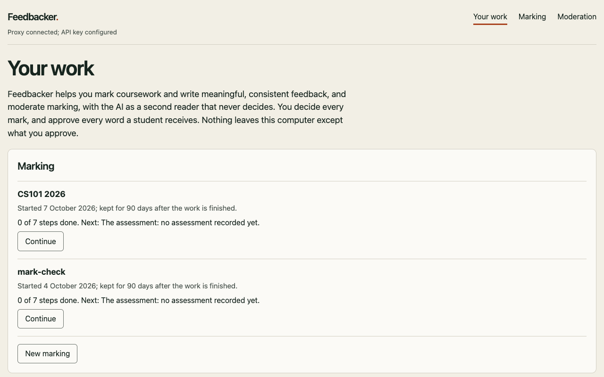
Your work. Each piece of work under marking or moderation, with how far it has got and what comes next. -
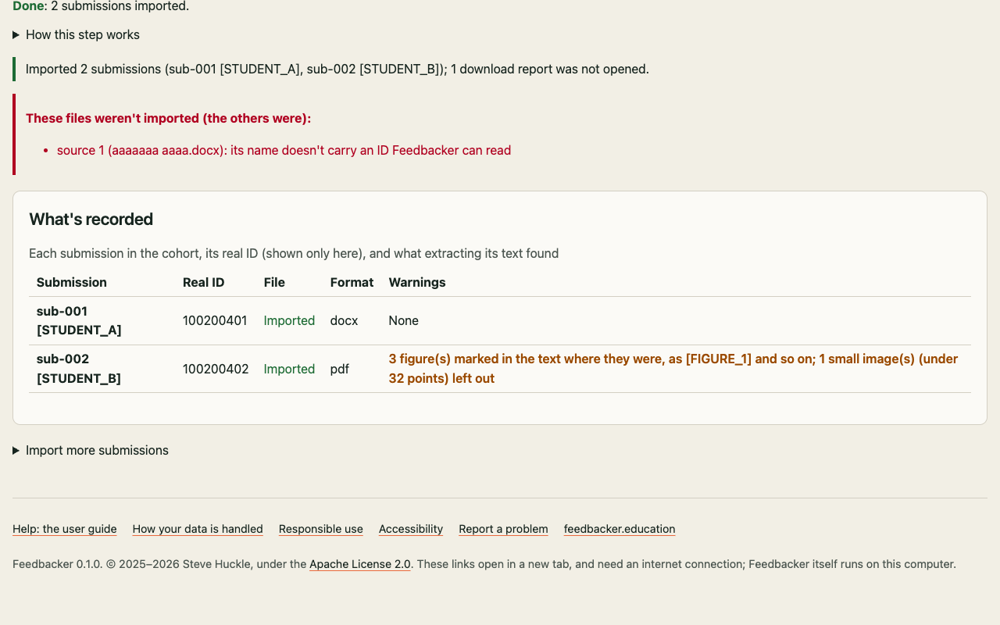
Importing the cohort. Every submission in the platform's bulk download, each under a pseudonym. A file whose name carries no student ID is listed, never guessed at. -
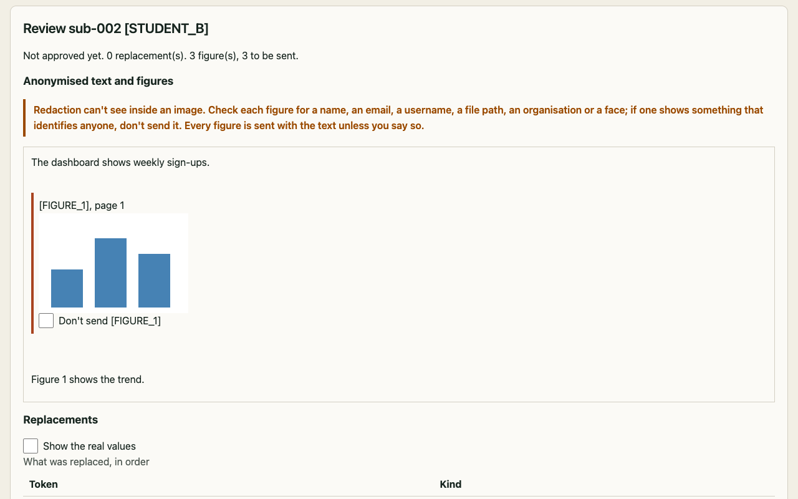
Anonymisation. Names, IDs and contact details are replaced on your computer. Images can't be anonymised, so each is shown where it was, for you to send or keep back. -
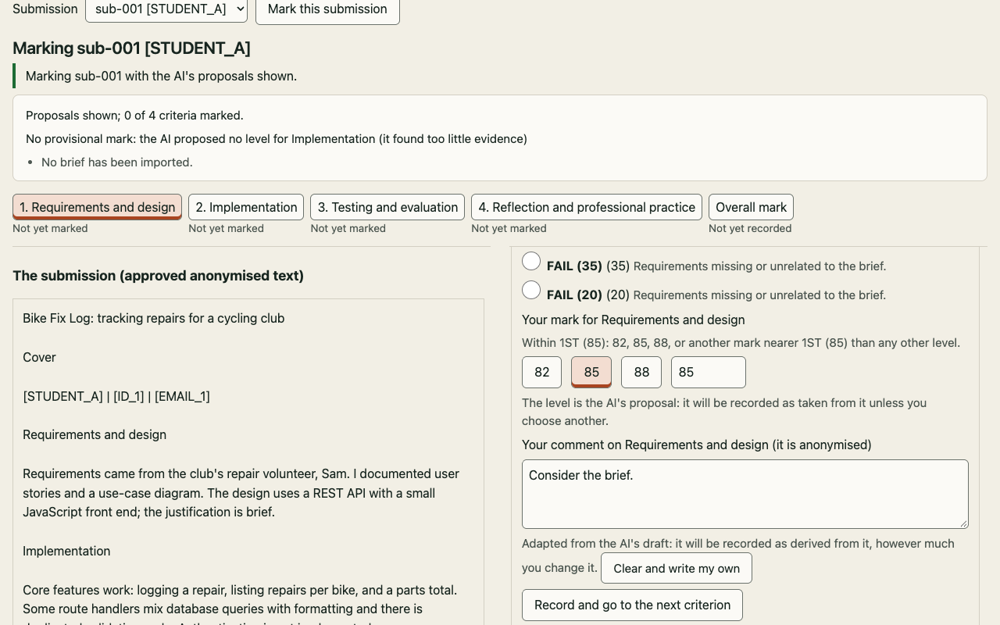
Marking. The submission beside the rubric. The AI's suggested level, if you ask for it, is only a starting point: you choose every level and every mark. -
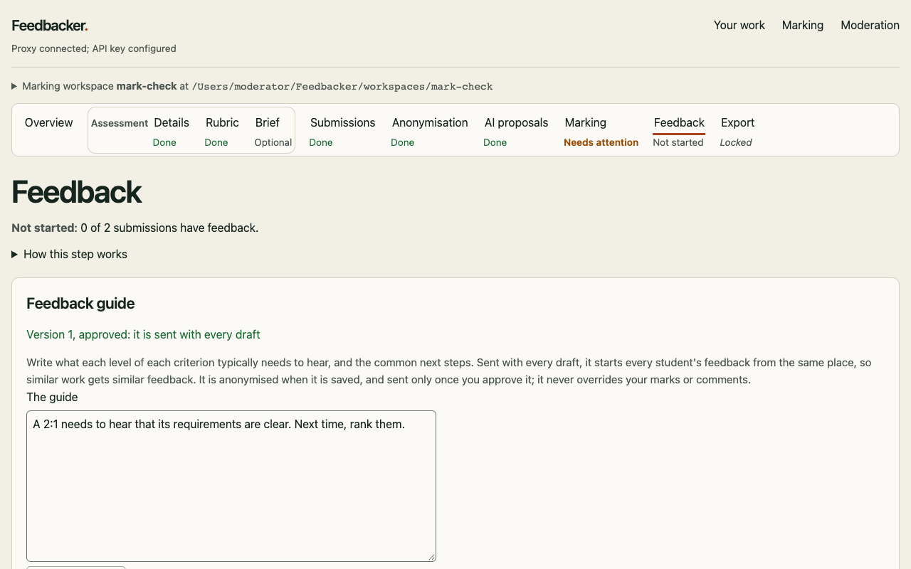
The feedback guide. What each level typically needs to hear, approved by you before it is sent with every draft, so similar work gets similar feedback. -
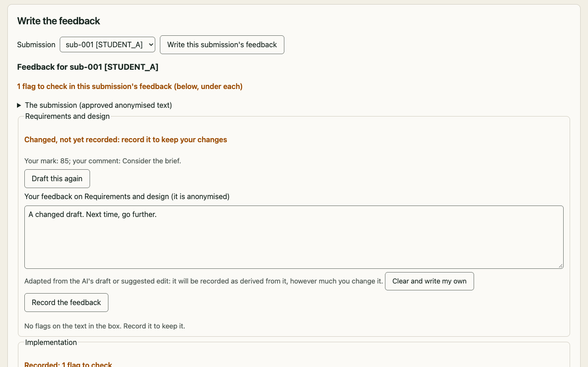
Writing the feedback. The AI drafts from your own marks and comments; you edit and record it. Each piece is checked against its mark. -
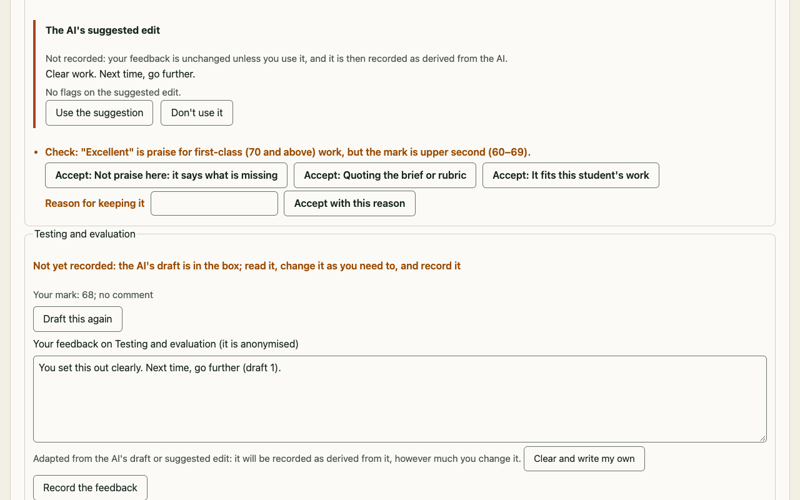
A flag, and a suggested edit. Praise above the mark is flagged. You can use the AI's suggested edit, change it, or keep your words with a reason. -
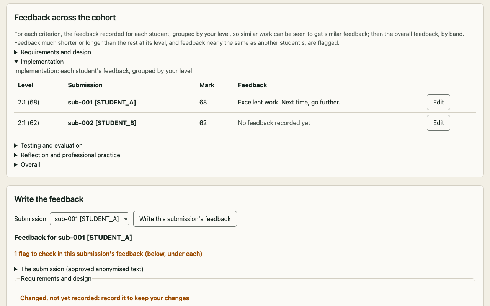
Across the cohort. Each criterion's feedback side by side, grouped by your level, so you can see similar work gets similar feedback. -
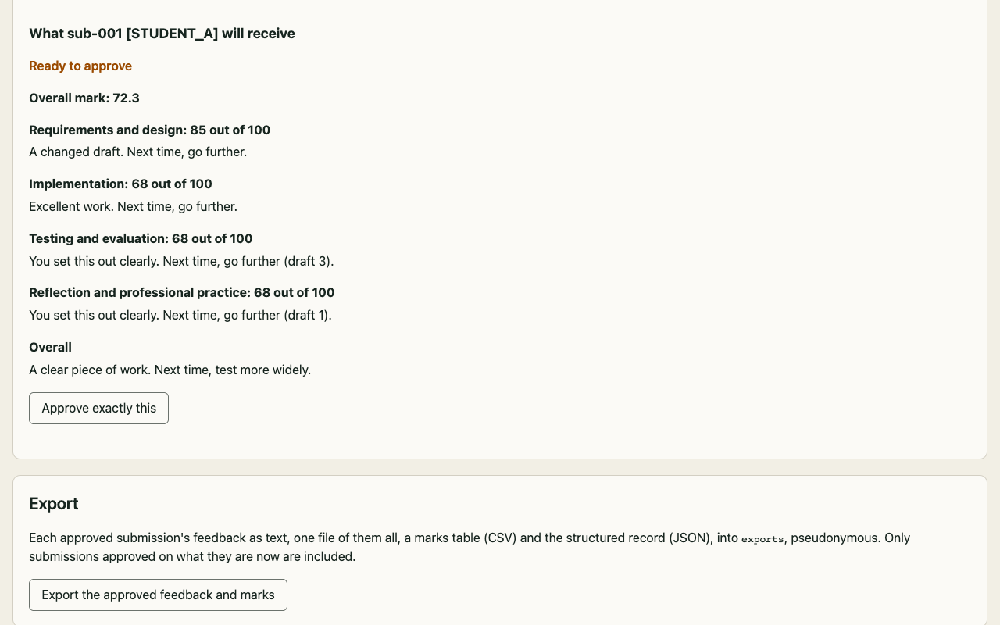
What a student receives. Exactly the marks and feedback that will be released, for you to approve as they are. -
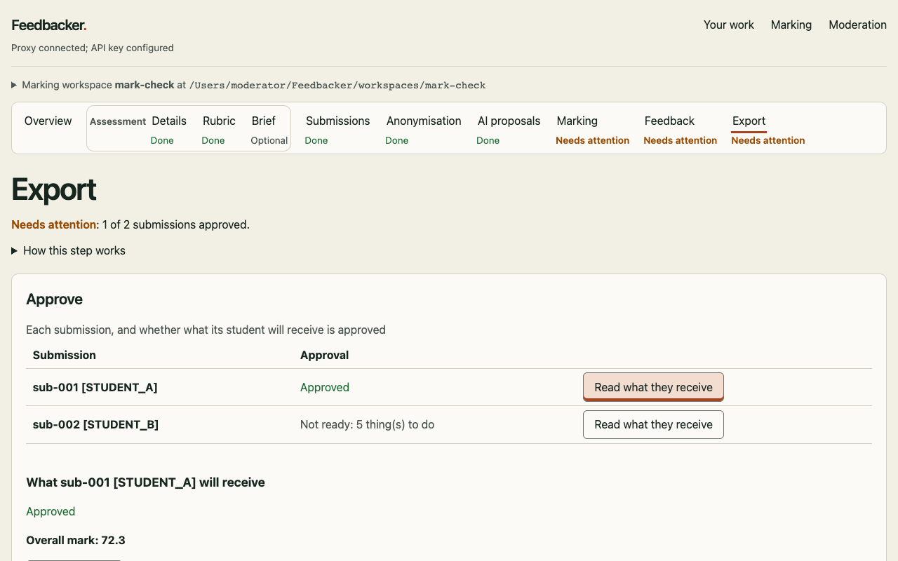
Approved and exported. Only what you approved is exported: each student's feedback, and a table of marks, ready to paste into the marking platform.
Moderation
Checking a colleague's marking, with a second reader.
-
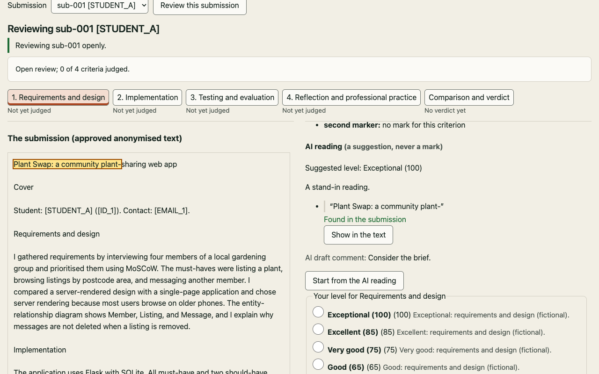
An open review. The AI's independent reading beside the submission. Every quote it cites can be shown in the text. -
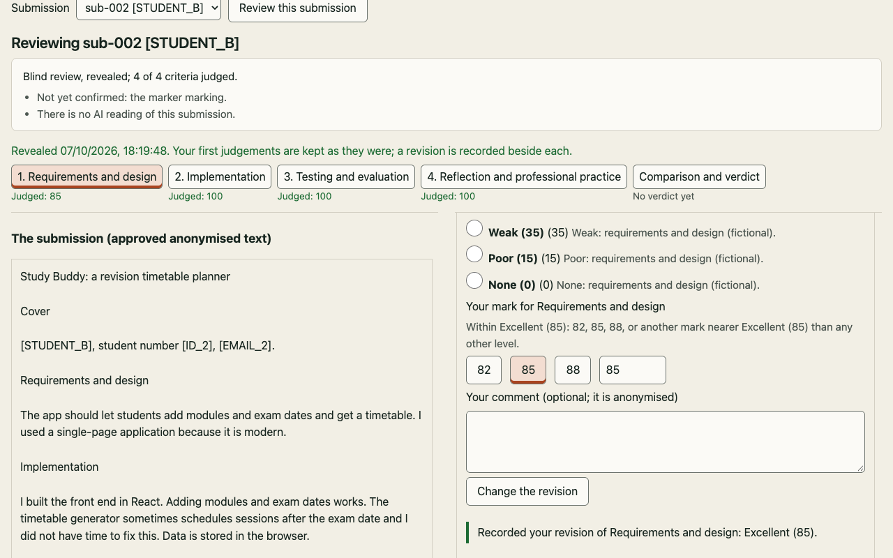
A blind review. Your own judgements first; then the original marking and the AI's reading are revealed, and any revision is recorded beside your first. -
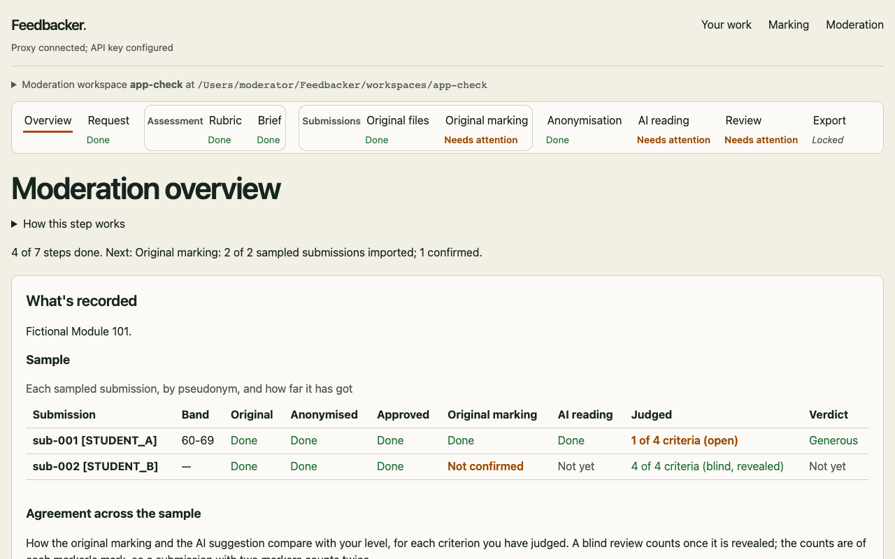
The overview. How far each sampled submission has got, and where you, the original marker and the AI agree. -
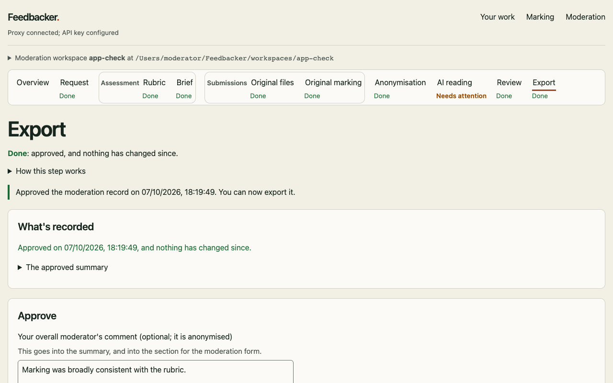
The moderation record. Approved by you, and exported as a summary ready for the moderation form, in Word and Markdown.
Try it